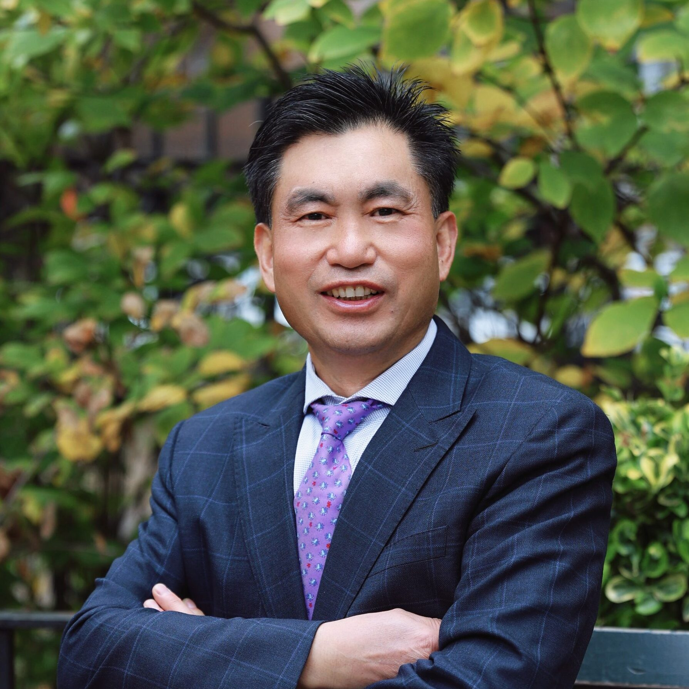

乐贵祥 医师｜纽约州执照针灸师
- 资质：中医博士；纽约州执照针灸师
- 学术与社会职务：世界中医药联合会特考主任医师；世界针灸学会联合会执行委员；世界中医药学会联合会常务理事；纽约州执照针灸医师联合公会第九、第十届会长
- 擅于治疗
- 痛症与运动系统疾病：腰痛；颈肩疼痛；关节疼痛；四肢麻痹；头痛头晕。
- 神经系统疾病：神经痛；中风偏瘫；痴呆；耳鸣。
- 泌尿与性功能障碍：尿频；尿急；排尿困难；尿失禁；男女泌尿异常；男女性功能早衰。
- 消化与内科疾病：腹胀便秘；消化功能异常；放疗化疗后遗症。
- 预防与保健：预防疾病；保健指导。
- 临床经验：从事医疗临床三十多年，先后在江西中医院及纽约多家康复医院担任针灸与理疗医生，积累了丰富的痛症、内科、神经及泌尿系统疾病的综合诊疗经验。
- 综合诊疗方法与特色：以中医辨证为纲，将中药、针灸、推拿、拔罐、艾灸与西医理疗、运动康复相结合，系统用于脊椎病、关节病与肢体功能障碍的预防与治疗；在泌尿科针灸治疗研究中承蒙世界针灸学会联合会刘保延教授指点，对尿频、尿急、排尿困难、尿失禁等常见病症形成了高效、规范的诊疗方案。